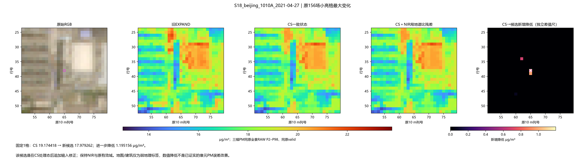
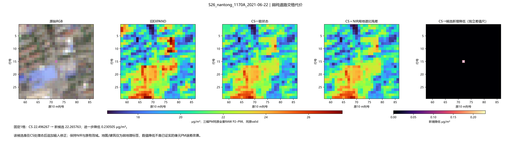
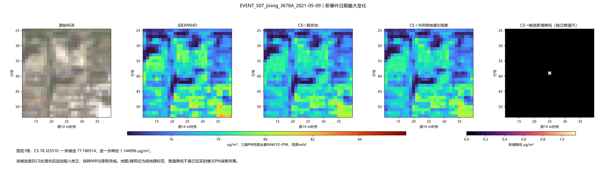
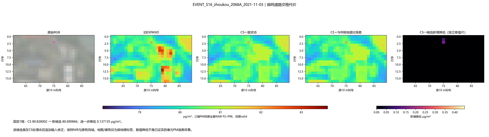
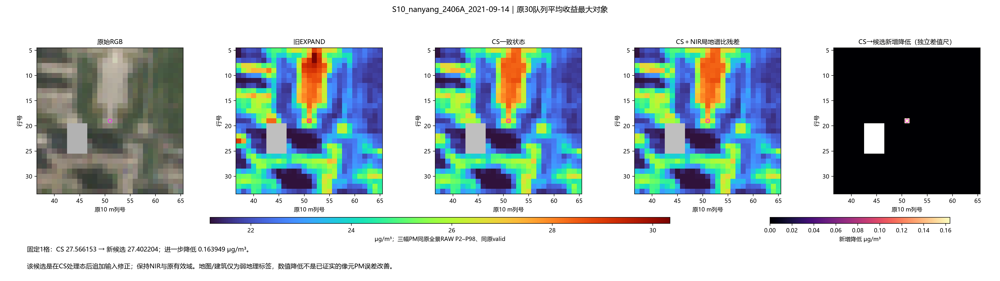
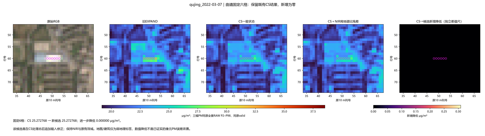
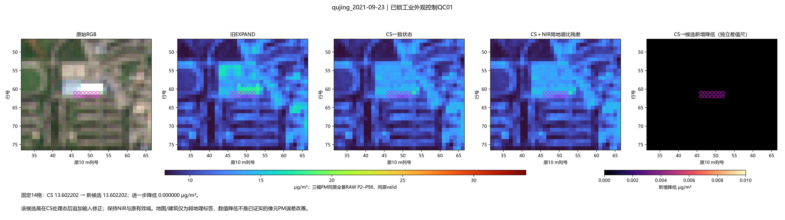

206场、0拟合，原方法参数冻结。449个原定义小亮格进一步降低；原30队列仅5对象有新增收益。该支在CS之后追加修正，不能与COMPACT图候选当作相同起点比较。
真实结论 · 方法与起点 · 全206汇总 · 原30队列 · 道路与工业控制 · 25事件对 · 原156受影响格 · 事件50受影响格
S18_beijing_1010A_2021-04-27

S26_nantong_1170A_2021-06-22

EVENT_S07_jining_3678A_2021-05-09

EVENT_S16_zhoukou_2068A_2021-11-03

S10_nanyang_2406A_2021-09-14

qujing_2022-03-07

qujing_2021-09-23
